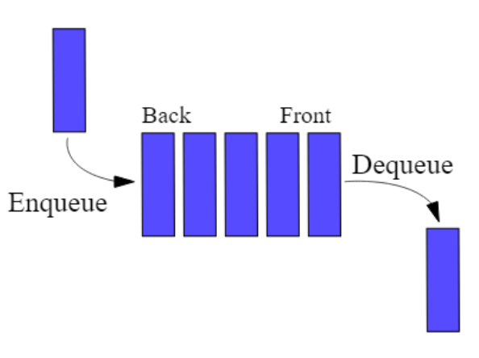

Files
Rappel d'ouverture (5 minutes, de mémoire, cahier fermé)
Les files s'appuient entièrement sur les piles. Vérifie que tu les tiens sans rouvrir le cours.
- Quelles sont les quatre primitives d'une pile ?
- La pile
pvaut[4, 7](du bas vers le haut). Qu'afficheprint(depiler(p)), et que vautpensuite ? - Si on empile
1puis2puis3dans une pile vide et qu'on dépile trois fois, dans quel ordre sortent les éléments ?
Correction
creer,est_vide,empiler,depiler.- Affiche
7, etpvaut[4].depilerretire et renvoie. 3,2,1: c'est le LIFO. Retiens cet ordre inversé, c'est exactement ce qui va servir à fabriquer une file.
Les files (queues en anglais) correspondent exactement à la notion de file dans la vie courante:
Une file d’attente à la caisse, à un feu rouge…

Lorsqu'on ajoute un élément, celui-ci se retrouve à la fin de la file, et on retire les éléments dans l’ordre dans lequel ils sont arrivés.
En anglais on dit first in, first out ou FIFO pour dire: premier arrivé premier sorti.
Ce type de structure de données est par exemple utilisé dans:
- Un gestionnaire d’impression pour ordonner l’ordre des impressions.
- Un processeur pour planifier l’ordre des opérations.
- Un serveur web pour ordonner les réponses en fonction de l’ordre des demandes.
Comme les piles, les files sont partout (parcours en largeur d'un graphe, files d'attente, ordonnancement), et tu les reverras toute l'année. Tout l'enjeu de ce cours est d'en obtenir une dont les opérations restent en O(1), à partir de deux piles.
Interface
Une file est définie par l’interface comprenant les primitives suivantes: Ici, f est une File contenant des éléments e de type T quelconque.
| Primitive | Description |
|---|---|
| CREER() → File | Renvoie une nouvelle File vide |
| EST_VIDE(f) → Booléen | Savoir si la file f est vide |
| ENFILER(e, f) | Ajouter un élément à l'entrée de la file |
| DEFILER(f) → T | Supprimer et renvoyer l'élément à la sortie de la file. Précondition : la file ne doit pas être vide. |
Une première implémentation : avec un tableau
Une liste Python sait déjà se comporter comme une file :
list.append(e)ajoute en fin de liste (l'entrée) ;list.pop(0)retire et renvoie le premier élément (la sortie).
type File[T] = list[T]
def creer[T]() -> File[T]:
return []
def est_vide[T](f: File[T]) -> bool:
return len(f) == 0
def enfiler[T](e: T, f: File[T]) -> None:
f.append(e) # on entre en fin de liste
def defiler[T](f: File[T]) -> T:
assert not est_vide(f), "File vide"
return f.pop(0) # on sort en tête
Remarque l'assert de defiler : comme pour la pile, défiler une file vide n'a pas de sens. Ce n'est pas un bug à corriger, c'est une précondition, une condition que l'appelant doit garantir. L'opération n'est tout simplement pas définie dans ce cas, et l'assertion le dit à voix haute au lieu de laisser passer une erreur silencieuse.
Cette implémentation fonctionne, mais pop(0) est coûteux : retirer le premier élément oblige à décaler tous les autres d'un cran, soit O(n) à chaque défilement.
Une solution toute faite : collections.deque
La bibliothèque standard fournit collections.deque, une file à deux bouts dont appendleft et pop sont en O(1). En pratique, c'est ce qu'on utiliserait. Mais l'objectif de ce cours est ailleurs : obtenir une file efficace uniquement à partir d'une structure qu'on maîtrise déjà, la pile.
Un piège à connaître avant de commencer
Piège : defiler vide la file
Comme depiler pour la pile, defiler retire l'élément (effet de bord). Compter les éléments d'une file ou en chercher un en défilant la détruit.
Plusieurs exercices ci-dessous demandent une fonction qui ne modifie pas la file. À toi de trouver comment la reconstruire à l'identique : c'est le vrai travail de cette page.
Exercices d'appropriation
Préparation
- Créer le fichier
structures/lineaires/file.py - Créer le fichier
exos/exos_files.py
Tous les exercices qui suivent s'écrivent dans exos/exos_files.py, et plusieurs manipulent aussi une pile. Ce fichier commence donc par ces deux lignes, une fois pour toutes :
C'est ce qui explique les préfixes que tu verras partout : file.defiler(...) appelle la fonction defiler du module file, et pile.empiler(...) celle du module pile. Le préfixe dit de quelle structure on parle, ce qui est utile précisément quand les deux sont en jeu dans la même ligne.
Et il dit surtout où tu es, comme sur la page des piles : préfixe, tu es dans un fichier d'exercice et tu utilises la structure ; pas de préfixe, tu es dans file.py et tu la fabriques. C'est la même frontière que celle du cours, interface d'un côté, implémentation de l'autre.
Écrire le fichier file.py
Reporter dans structures/lineaires/file.py l'implémentation avec un tableau ci-dessus, c'est-à-dire les quatre primitives.
C'est une implémentation correcte, et elle suffit pour tous les exercices qui suivent. On la remplacera plus tard par une meilleure, et ce sera l'occasion de vérifier quelque chose d'important.
On reprendra la même rigueur de typage que pour les piles.
Les exercices suivants se font dans le fichier exos_files.py.
File exemple
Créer une fonction file_exemple qui renvoie la file suivante:
--------------------------------------
> 'rouge' 'vert' 'jaune' 'rouge' 'jaune' >
--------------------------------------
Rappel de la frontière : le préfixe file. est là parce que tu es dans exos_files.py, donc du côté qui utilise la structure.
Sortie d'une file
Écrire une fonction qui renvoie l'élément à la sortie d'une file sans qu'elle soit modifiée à la sortie de la fonction.
Teste-la sur la file exemple : sortie(file_exemple()) doit rendre 'rouge'. Vérifie aussi qu'après l'appel la file contient toujours ses cinq éléments, dans le même ordre. C'est cette seconde vérification qui compte, et c'est celle qu'on oublie.
Sans exécuter le code
On considère la file exemple. Dessiner P et F après l’exécution du programme Python suivant.
# dans exos/exos_files.py
from structures.lineaires import file
from structures.lineaires import pile
F = file_exemple()
P = pile.creer()
while not(file.est_vide(F)):
pile.empiler(file.defiler(F), P)
Lis bien les préfixes : P est une pile, F est une file, et chaque appel dit à laquelle des deux il s'adresse.
Fonction mystère
Étant donné une file de départ f, on transfère son contenu dans une pile, puis on retransfère le contenu de la pile vers la file.
- Quel est l'effet de cet algorithme sur la file
f? Réponds avant d'écrire du code, en reprenant le dessin de l'exercice précédent. - Écris la fonction qui implémente cet algorithme. À toi de la nommer : une fonction se nomme d'après ce qu'elle fait, pas d'après la façon dont elle le fait.
mystereettransfertsont donc de mauvais noms. - Teste-la sur la file exemple.
Indice pour le nom
Écris la file avant, puis la file après, l'une sous l'autre. Le nom est dans la comparaison des deux lignes.
Taille d'une file
Créer 2 fonctions taille_file_nuke et taille_file qui renvoient la taille d'une file de manière:
- Destructive
- Non destructive
Puis écris leurs deux fonctions de test, test_taille_file_nuke et test_taille_file, avec des assert. Une fonction de test ne prend rien, ne renvoie rien, et échoue bruyamment si le code est faux.
Chacune doit vérifier deux choses : que la taille renvoyée est la bonne, et que la file est dans l'état attendu après l'appel. Ce n'est pas le même état dans les deux cas, et c'est tout l'intérêt de les tester séparément.
Indice : que vérifier après l'appel
Pour la version destructive, la file doit être vide. Pour l'autre, elle doit être intacte : même taille, et la sortie doit toujours être 'rouge'.
Occurrences
Écrire une fonction nb_elements qui prend en paramètres une file et un élément de n'importe quel type, et qui renvoie le nombre de fois où l'élément est présent dans la file. Après appel de cette fonction la file doit avoir retrouvé son état d’origine. Tu commenceras bien sûr par prendre le temps d'écrire la signature de la fonction proprement.
On te donne la fonction de test. Lis-la avant d'écrire nb_elements : elle dit exactement ce qui est attendu, y compris ce qu'on oublie toujours, à savoir que la file survive à l'appel.
def test_nb_elements() -> None:
F = file_exemple()
assert nb_elements(F, "rouge") == 2
assert nb_elements(F, "vert") == 1
assert nb_elements(F, "violet") == 0
# la file doit avoir survécu aux trois appels précédents :
assert file.defiler(F) == "rouge"
assert taille_file(F) == 4
Indice léger
Tu ne peux voir que la sortie de la file. Pour examiner tous les éléments, il faut donc les faire sortir. Reste à savoir où tu les mets en attendant, et comment tu les remets dans le bon ordre.
Indice plus précis
Une pile temporaire inverserait l'ordre, une file temporaire le conserve : ce qui entre en premier en ressort en premier, deux fois de suite. Défile f en entier, compte au passage, enfile chaque élément dans la file temporaire, puis vide la temporaire dans f.
Avant d'ouvrir la solution
En une phrase, sur ton cahier : qu'est-ce que l'indice t'a appris sur ce qui n'allait pas dans ton code ?
Solution
def nb_elements[T](f: File[T], e: T) -> int:
"""Nombre d'occurrences de e dans f. La file f est laissée intacte."""
n: int = 0
temp: File[T] = creer()
while not est_vide(f):
x = defiler(f)
if x == e:
n += 1
enfiler(x, temp)
while not est_vide(temp):
enfiler(defiler(temp), f)
return n
Retiens la structure : sortir, garder au passage, remettre. Une fonction qui prétend ne pas modifier une file doit toujours la reconstruire. Tu viens de l'écrire pour la troisième fois, après « Sortie d'une file » et « Taille non destructive » : la section suivante en tire la conséquence.
Généraliser ce que tu viens de faire trois fois : la fonction elements
Regarde en arrière. Dans « Sortie d'une file », dans « Taille non destructive » et dans « Occurrences », tu as écrit trois fois la même chose : vider la file dans une temporaire, faire quelque chose au passage, puis tout remettre. Seul le « quelque chose » changeait.
Quand un même motif revient trois fois, on l'écrit une fois pour toutes.
Écris elements, puis ajoute-la à file.py
Écris une fonction elements qui renvoie la liste des éléments d'une file, de la sortie vers l'entrée, sans modifier la file.
def elements[T](f: File[T]) -> list[T]:
"""Liste des éléments de f, de la sortie vers l'entrée, sans modifier f."""
Deux exigences, et la seconde est la plus importante :
- elle n'utilise que les quatre primitives, jamais l'intérieur de la file ;
- à la fin,
fdoit être exactement dans l'état où elle était au début, contenu et ordre.
Indice
Tu l'as déjà écrit dans « Occurrences ». Reprends ta solution et enlève le comptage : ce qui reste est elements.
Avant d'ouvrir la solution
En une phrase, sur ton cahier : pourquoi une file temporaire, et pas une pile ?
Solution
def elements[T](f: File[T]) -> list[T]:
"""Liste des éléments de f, de la sortie vers l'entrée, sans modifier f."""
resultat: list[T] = []
temp: File[T] = creer()
while not est_vide(f):
e = defiler(f)
resultat.append(e)
enfiler(e, temp)
while not est_vide(temp): # on remet f dans son état initial
enfiler(defiler(temp), f)
return resultat
Une file temporaire, parce qu'elle conserve l'ordre : ce qui y entre en premier en ressort en premier, et deux transferts de suite rendent donc f identique. Une pile l'aurait inversée, et il aurait fallu deux piles pour rattraper.
Ajoute cette fonction à structures/lineaires/file.py. Elle n'utilise que l'interface : elle marchera donc quelle que soit l'implémentation, et tu vérifieras ce point tout à l'heure.
Le vrai objectif du cours : la même file, mais efficace
On veut construire une file sans jamais toucher à une liste directement, à partir de la seule interface de la pile (creer, est_vide, empiler, depiler). C'est l'idée forte de l'abstraction : une structure peut s'appuyer sur l'interface d'une autre, sans rien connaître de son implémentation.
L'idée. On utilise deux piles, entree et sortie.
- Enfiler : on empile sur
entree. - Défiler : la file ne doit pas être vide ; si
sortieest vide, on bascule toutentreedanssortie(ce qui inverse l'ordre), puis on dépilesortie.
Attention à ne pas confondre les deux « vides », c'est le piège de cette structure. « sortie est vide » déclenche un basculement : la file, elle, contient peut-être encore des éléments, ils sont dans entree. « La file est vide » est tout autre chose : les deux piles le sont, et c'est là que la précondition est violée. Une seule des deux conditions interrompt le programme.
Empiler sur entree place le dernier arrivé au sommet ; le basculement l'envoie au fond de sortie. Le premier arrivé se retrouve donc au sommet de sortie : c'est bien du FIFO.
Le bac à sable : manipule la file avant de l'écrire
Ci-dessous, une file à deux piles que tu peux actionner. Elle ne te donne pas le code : elle te donne le comportement. Le texte ci-dessus dit les règles, le bac à sable montre les états. Avec les deux, tu as tout ce qu'il faut pour écrire l'implémentation toi-même, et c'est ce qu'on te demande juste après.
Chaque defiler te demande d'abord ce qu'il va rendre. Réponds avant de valider : c'est là que tu vérifies ton modèle, pas en regardant.
Tu remarqueras que le bouton défiler est grisé quand la file est vide. Ce n'est pas une facilité d'interface : c'est la précondition. Dans ton code, il n'y aura pas de bouton grisé, il y aura un assert qui arrête le programme.
Deux manipulations, dans cet ordre
- Enfile cinq éléments, puis défile-les un par un. Regarde la colonne « coût du dernier appel ». Que remarques-tu sur le premier défilement comparé aux quatre suivants ? Et sur le coût moyen ?
- Alterne : enfile, défile, enfile, défile. Le coût moyen change-t-il ?
Ce que la manipulation 1 doit t'apprendre
Le premier defiler coûte cher : il bascule toute la pile entree. Les suivants coûtent 1, parce que sortie n'est plus vide et qu'il n'y a rien à rebasculer.
Chaque élément ne traverse qu'une seule fois de entree vers sortie au cours de sa vie dans la file. C'est pour cela qu'on dit que le coût est en O(1) amorti : pas « toujours 1 », mais « 1 en moyenne, sur la durée ».
C'est la seule chose que ce bac à sable sait montrer et qu'une feuille de papier montre mal. Pour tout le reste, ta trace à la main vaut mieux.
Maintenant, à la main : trace le basculement
Le bac à sable te l'a montré ; à toi de le produire. Remplis ce tableau à la main, ligne par ligne, sans le rouvrir. La dernière colonne est celle qui compte : enfiler ne rend rien, defiler rend un élément et le retire.
| opération | entree (bas vers haut) |
sortie (bas vers haut) |
valeur rendue |
|---|---|---|---|
enfiler(1, f) |
|||
enfiler(2, f) |
|||
defiler(f) |
|||
enfiler(3, f) |
|||
defiler(f) |
|||
defiler(f) |
À ouvrir une fois que tu as rempli les six lignes
| opération | entree |
sortie |
valeur rendue |
|---|---|---|---|
enfiler(1, f) |
[1] |
[] |
rien |
enfiler(2, f) |
[1, 2] |
[] |
rien |
defiler(f) |
[] |
[2] |
1, après basculement |
enfiler(3, f) |
[3] |
[2] |
rien |
defiler(f) |
[3] |
[] |
2, sans basculement |
defiler(f) |
[] |
[] |
3, après basculement |
Pourquoi la condition « si sortie est vide » ?
Refais ta trace ci-dessus à la main, en supprimant cette condition, c'est-à-dire en basculant entree dans sortie à chaque defiler. Quelle valeur rend le cinquième appel ?
Le bac à sable ne te le montrera pas : il n'implémente que la version correcte. C'est à toi de le trouver, et c'est le seul exercice de la page où tu fabriques toi-même une panne.
Ce que tu dois trouver
Au quatrième pas, entree vaut [3] et sortie vaut [2]. Un basculement inconditionnel empile donc 3 par-dessus 2, et sortie vaut [2, 3]. Le defiler suivant rend 3 alors qu'il devrait rendre 2 : l'ordre FIFO est cassé.
La condition n'est pas une optimisation, c'est ce qui rend la file correcte. Retiens le raisonnement, pas la ligne de code : basculer une pile dans une autre inverse son ordre, donc mélanger deux vagues de basculement mélange deux ordres.
Maintenant, écris l'implémentation
Tu as le texte, qui te donne les règles. Tu as le bac à sable, qui te montre les états. Tu as ta trace à la main. Cela suffit : écris file.py toi-même, sans regarder la correction.
On te donne seulement la déclaration du type, parce qu'elle contient une décision de conception qui ne se devine pas :
from structures.lineaires import pile
type File[T] = tuple[pile.Pile[T], pile.Pile[T]] # (entree, sortie)
À écrire, avec signatures typées et docstrings testables comme pour les piles : creer, est_vide, enfiler, defiler.
Trois questions à te poser avant d'écrire defiler, dans cet ordre :
- Quand faut-il basculer, et comment le sais-tu ?
- Que veut dire « basculer », en n'utilisant que les primitives de la pile ?
- Une file vide, c'est quoi, quand la file est faite de deux piles ?
Indice léger
defiler ne fait pas toujours la même chose. Il commence par un test, et ce test ne porte pas sur la file entière.
Indice précis
Le basculement est une boucle : tant que entree n'est pas vide, dépiler entree et empiler le résultat sur sortie. Une seule ligne de corps.
En une phrase, sur ton cahier, avant d'ouvrir la solution
Qu'est-ce que ton defiler fait quand sortie n'est pas vide ? Écris-le en français. Si tu ne sais pas le dire, tu ne sais pas encore l'écrire.
Solution
def creer[T]() -> File[T]:
return (pile.creer(), pile.creer())
def est_vide[T](f: File[T]) -> bool:
entree, sortie = f
return pile.est_vide(entree) and pile.est_vide(sortie)
def enfiler[T](e: T, f: File[T]) -> None:
entree, _ = f
pile.empiler(e, entree)
def defiler[T](f: File[T]) -> T:
assert not est_vide(f), "File vide"
entree, sortie = f
if pile.est_vide(sortie):
while not pile.est_vide(entree):
pile.empiler(pile.depiler(entree), sortie)
return pile.depiler(sortie)
Remarque que enfiler ignore sortie et que defiler ne touche entree que pour la vider. Aucune des deux ne regarde dans une pile : elles n'utilisent que creer, est_vide, empiler, depiler. C'est ce qui fait qu'une file peut être bâtie sur une pile sans rien savoir de son intérieur.
Et la complexité ?
Un défilement peut coûter cher quand il faut tout basculer. Mais chaque élément n'est basculé qu'une seule fois de entree vers sortie sur toute sa vie dans la file. Réparti sur l'ensemble des opérations, le coût est en O(1) amorti, bien meilleur que le pop(0) du tableau.
Ce que l'IA ne change pas
Une IA écrit enfiler et defiler, et elle sait aussi les spécifier et les tester. Le point n'est pas là.
La file avec deux piles est le meilleur exemple de ce qui reste à ta charge : le code est court, mais l'essentiel est de se convaincre, tests à l'appui, qu'il respecte bien le contrat FIFO. Cette conviction ne se délègue pas : ou bien tu sais dire ce que doit produire la structure (y compris quand on défile une file vide) et tu peux valider ce que tu lis, ou bien tu fais confiance sans pouvoir vérifier.
Et maintenant, la vraie leçon : tes exercices marchent toujours
Tu viens de remplacer entièrement l'intérieur de la file. La première version stockait une liste Python ; celle-ci ne connaît que des piles. Rien de commun.
Relance tes exercices, sans en changer une ligne
- Dans
structures/lineaires/file.py, remplace l'implémentation à tableau par celle à deux piles que tu viens d'écrire. Gardeelements, qui n'a pas à changer. - Ne touche à rien dans
exos/exos_files.py. - Relance tes tests.
Ce que tu dois constater, et ce que ça veut dire
Tout passe. file_exemple, taille_file, nb_elements, la fonction mystère : aucune n'a bougé, et aucune n'avait besoin de bouger.
C'est la démonstration du cours, et elle ne se raconte pas, elle se constate. Tes fonctions n'ont jamais utilisé que les quatre primitives. Elles ne savaient pas ce qu'il y avait sous le capot, donc elles ne pouvaient pas être cassées par un changement de capot.
Retiens la contrepartie, qui est la vraie discipline : si l'une de tes fonctions avait triché, en écrivant par exemple f.pop(0) ou f[0] au lieu de passer par defiler, elle serait cassée maintenant. C'est à ce moment précis qu'on paie la triche, pas avant.
Le seul exercice dont la réponse change, et c'est instructif
L'exercice « Sans exécuter le code » demandait de dessiner F. Le contenu de la file, lui, est identique dans les deux versions. Mais sa forme interne ne l'est plus du tout : avant, une liste ; maintenant, deux piles dont l'une est peut-être vide.
Ce qui devrait donc être dessiné, c'est la file comme suite d'éléments de la sortie vers l'entrée, jamais sa représentation interne. Si ton dessin dépend de l'implémentation, c'est que tu regardais sous le capot.
Définition - Structure de données abstraite
Une structure de données est dite abstraite quand on la définit par ce qu'elle sait faire (son interface) et non par la façon dont elle est faite (son implémentation). Un même comportement peut alors avoir plusieurs réalisations, qui se distinguent par leur coût.
Regarde les deux ensemble, maintenant que tu les as écrites toutes les deux :
| avec un tableau | avec deux piles | |
|---|---|---|
| ce qu'on écrit pour l'utiliser | creer, est_vide, enfiler, defiler |
creer, est_vide, enfiler, defiler |
| ce qu'il y a à l'intérieur | une list |
un couple de Pile |
| coût d'un défilement | O(n) |
O(1) amorti |
La première ligne est l'interface, et elle n'a pas changé. La deuxième est l'implémentation, et elle a entièrement changé. La troisième dit pourquoi on s'est donné ce mal.
Choisir sous contrainte : la structure ne se devine pas, elle se justifie par son coût
Pour chacune des trois situations, dis quelle structure tu utiliserais et pourquoi, en parlant de coût. Attention : dans un cas, la bonne réponse n'est ni une pile ni une file.
- Annuler la dernière action d'un éditeur de texte, autant de fois que l'utilisateur le demande.
- Servir des documents d'impression dans l'ordre où ils ont été envoyés.
- Savoir si un pseudonyme est déjà pris, parmi dix mille pseudonymes déjà enregistrés.
Indice
Ne commence pas par le nom de la structure. Demande-toi d'abord : quel élément dois-je atteindre, et combien d'éléments dois-je regarder pour l'atteindre.
En une phrase, avant d'ouvrir la correction
Écris pour toi, sur ton cahier, ce que chaque situation coûte si tu choisis mal. C'est cette phrase-là qui te servira à l'épreuve pratique, pas le nom de la structure.
Correction
- Une pile. L'élément dont on a besoin est le dernier entré, et une pile le rend sans parcourir quoi que ce soit :
O(1). - Une file. L'élément dont on a besoin est le premier entré. Attention au piège : une file mal implémentée, avec
pop(0)sur un tableau, coûteO(n)à chaque document. C'est le sujet entier de ce cours. - Ni l'une ni l'autre : un dictionnaire (ou un ensemble). Ni pile ni file ne permettent de chercher un élément quelconque autrement qu'en les parcourant, donc en
O(n). Un dictionnaire répond enO(1). Une structure ne se choisit pas parce qu'elle est au programme, mais parce que son coût correspond à ce qu'on lui demande.
Bonus : la suite de Conway
Look-and-say
À faire une fois tout le reste terminé. C'est le seul exercice de la page qui te fasse manipuler deux files à la fois, et il n'apporte aucune notion nouvelle : c'est de l'entraînement, sur une suite amusante.
La suite « Look-and-say », de Conway, consiste à lire à haute voix une série de chiffres en les groupant : ainsi la suite 11121223 se lit « trois 1, un 2, un 1, deux 2, un 3 », qu'on écrit 3112112213.
- Écrire une fonction
etapequi prend deux files,entreeetsortie, en paramètre. Elle retire lesnpremiers chiffrescidentiques deentreeet ajoute les chiffresnetcà la sortie. Teste cette fonction. - Écrire une fonction
lookandsayqui prend une file et renvoie la file transformée. Teste-la sur l'exemple ci-dessus. - Afficher les 10 premières valeurs de la suite à partir d'une file contenant seulement un 1.
Indice sur la question 1
Pour savoir combien de chiffres identiques se suivent, tu dois en défiler un, puis regarder le suivant sans le perdre. Or defiler retire. Relis « Lire une file sans la détruire » : le problème y est déjà résolu.
Ce que tu peux remarquer, si tu as fait le bonus jusqu'au bout
Les termes de cette suite grandissent vite. Regarde le nombre de defiler que fait ton programme au dixième terme, et souviens-toi de ce que t'a montré le compteur du bac à sable : c'est exactement le genre de situation où le coût d'une file cesse d'être une question théorique.